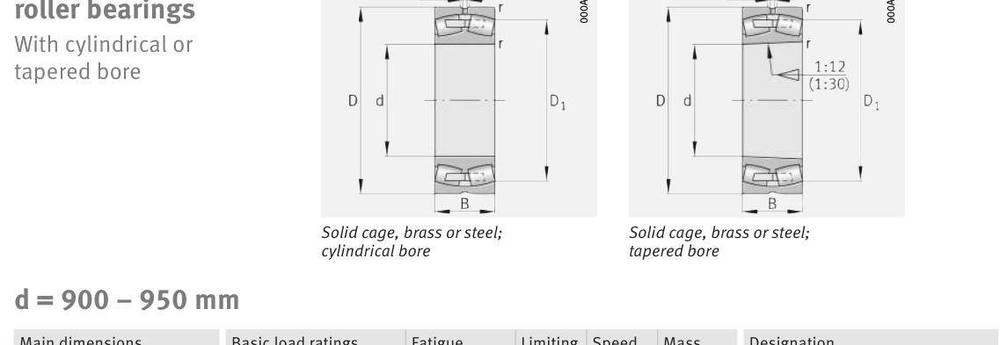

Original catalogue drawing - FAG Schaeffler HR 1, page 746

Scanned from the manufacturer catalogue page listing this part number. All part numbers printed on that table share the same drawing.
Scale cross-section
Blue = inner / outer ring, yellow = rolling element. Drawn to scale from this part's own
dimensions for selection reference only - not a manufacturing or assembly drawing.
Dimension table (mm / inch)
Symbol
Dimension
mm
inch
d
Bore diameter
950
37.4016
D
Outside diameter
1250
49.2126
B
Inner-ring / bearing width
224
8.8189
r
Chamfer (min)
7.5
0.2953
Notes
Weights are given in kg. Load ratings are shown in both the original catalogue units and the converted value (1 N = 0.2248 lbf). Data is provided for selection reference only - confirm against the latest official catalogue before ordering.
Main dimensions
Bore d (mm)
950
Outside dia. D (mm)
1250
Width B (mm)
224
Inner-ring shoulder dia. D1 (mm)
1
Load ratings & speeds
Basic dynamic load rating Cr (lbs)
1686067
Basic static load rating Cor (lbs)
4473698
Basic dynamic load rating Cr (N)
7.5e+06
Basic static load rating C0r (N)
1.99e+07
Fatigue limit load Cur (N)
1.28e+06
Factor e
0.16
Factor Y0
4.13
Limiting speed nG (rpm)
475
Reference speed nB (rpm)
239
Weight
Weight (kg)
747.0
Mounting dimensions (fillets / shoulders)
Housing fillet r max (mm)
7.5
Shaft shoulder da (mm)
978
Housing shoulder Da (mm)
1222
Housing fillet ra max (mm)
6
Bearing life (ISO 281 basic rating life)
C / P
Equivalent load P (N)
L10 (106 rev)
L10h at 100 rpm
4
1,875,000
102
16,932
6
1,250,000
392
65,416
8
937,500
1,024
170,667
10
750,000
2,154
359,072
15
500,000
8,323
1,387,244
Basic rating life per ISO 281: L10 = (C/P)10/3 with C = 7,500,000 N. Hours = L10 x 106 / (60n). Life-modification factors for lubrication, contamination and temperature (aISO) are not included.
Source & traceability
Brand
FAG
Source catalogue
FAG / Schaeffler Rolling Bearings HR 1
Catalogue page
p.746 (dimensions)
Load ratings in newtons, fatigue limit load Cur, limiting speed nG and reference speed nB.
Send us the quantity you need and we will come back with price and
lead time, normally within 24 hours. Equivalent parts from other brands can be quoted at the same time.